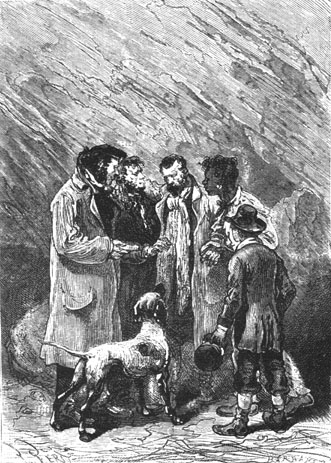
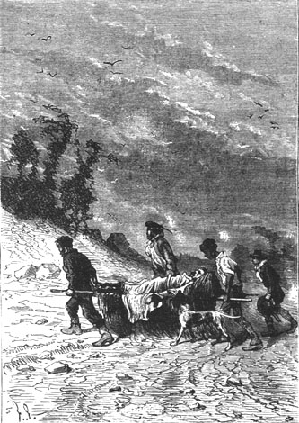

Neb did not move. The sailor said only one word to him.
“Living?” he cried.
Neb did not reply. Gideon Spilett and Pencroff turned pale. Herbert clasped his hands and remained immobile. But it was evident that the poor negro, absorbed in his grief, had neither seen his companions nor heard the sailor’s words.
The reporter knelt next to the motionless body and placed his ear on the chest of the engineer after having half-opened his garment. A minute—a century—passed, during which he tried to detect some heartbeat.
Neb had straightened up a bit and stared without seeing. Despair could not have changed a man’s face more. Neb was unrecognizable, exhausted by fatigue, broken by pain. He believed his master dead. Gideon Spilett got up after a long and careful examination.
“He lives!” he said.
Pencroff, in his turn, knelt next to Cyrus Smith; his ear also detected some heartbeats and some breath that escaped from the engineer’s lips.
On a word from the reporter Herbert ran outside to look for water. A hundred feet away he found a clear stream, evidently very swollen by the rains of the previous evening, which filtered through the sand. But there was nothing in which to carry this water, not a shell among these dunes. The lad had to content himself with dipping his handkerchief into the stream, and he ran back to the cave.
Fortunately the soaked handkerchief was sufficient for Gideon Spilett who wanted only to wet the engineer’s lips. These molecules of cool water produced an almost immediate effect. A sigh escaped from Cyrus Smith’s chest and it even appeared that he was trying to say a few words.
“We will save him!” said the reporter.
At these words Neb recovered hope. He undressed his master in order to see if the body showed any wound. Neither the head nor the torso nor the limbs had any contusions, not even any scratches, a surprising thing, since the engineer’s body must have been tossed around the rocks. Even the hands were intact, and it was difficult to explain how the engineer showed no trace of the efforts he must have made to get past the reef.
But the explanation of these circumstances would come later. When Cyrus Smith would be able to speak he would tell what had happened. For the moment they must recall him to life and it was likely that rubbing would bring on this result. This is what was done with the sailor’s pea jacket. The engineer, warmed by this rough massage, moved his hands slightly and his respiration began to re-establish itself in a more regular fashion. He was dying of exhaustion and certainly without the arrival of the reporter and his companions it would have been all over for Cyrus Smith.
“You therefore thought that your master was dead?” the sailor asked Neb.
“Yes! Dead!” replied Neb, “and if Top had not found you, if you had not come, I would have buried my master and I would have died beside him!”
One could see on what the life of Cyrus Smith had depended!
Neb related what had happened. The day before, after having left the Chimneys at daybreak, he went along the coast in a northeasterly direction and reached the point on the shore that he had already visited.
There, without any hope he admitted, Neb searched on the shore, among the rocks, on the sand, for the least indication to guide him. He had especially examined the part of the shore that the high tide had not reached because on the beach the rise and fall of the tide had erased all indices. Neb no longer hoped to find his master living. It was to discover a cadaver that he went, a cadaver that he wanted to bury with his own hands!
Neb searched for a long time. His efforts remained fruitless. It did not seem that this deserted coast had ever been frequented by a human being. Those shells that the sea had not reached—and which could be seen by the millions above the tideline—were intact. Not a crushed shell. In a zone of two to three hundred yards 1 not a trace of a landing existed neither past nor present.
Neb then decided to go along the coast for several miles. It is possible that currents can carry a body to a far point. When a cadaver floats a short distance from a straight shore it is rare when the waves do not reject it sooner or later. Neb knew this and he wanted to see his master one last time.
“I ran along the shore for two more miles. I visited the entire reef line at low tide, the entire beach at high tide, and I despaired of finding anything when yesterday, about five o’clock in the evening, I noted footprints in the sand.”
“Footprints?” cried Pencroff.
“Yes!” replied Neb.
“And did these footprints begin at the reef?” asked the reporter.
“No,” replied Neb, “at the high water mark only, because those between the high water mark and the reef were effaced.”
“Continue, Neb,” said Gideon Spilett.
“When I saw these prints I became insane. They were very distinct and went toward the dunes. Running, I followed them for a quarter of a mile but taking care not to erase them. Five minutes later, as night was coming on, I heard a dog barking. It was Top, and Top led me here to my master.”
Neb finished his recital by telling them about his grief on finding this inanimate body. He tried to detect some sign of life in him. Now that he had found him dead he wanted him alive. All his efforts were useless. Nothing remained but to render the last rites to him that he loved so much.
Neb then thought of his companions. Doubtless they would want to see the unfortunate for one last time. Top was there. Couldn’t he count on the shrewdness of the faithful animal? Neb pronounced the reporter’s name several times, the one that Top knew best of the engineer’s companions. Then he pointed to the south of the shore and the dog darted off in the direction that was indicated to him.
We already know how, guided by an instinct that could almost be regarded as supernatural because the animal had never been to the Chimneys, Top nevertheless arrived there.
Neb’s companions carefully listened to this recital. It astonished them that Cyrus Smith, after the efforts he must have made to escape the waves and get past the reef, did not even show a scratch. And what was also unexplainable was that the engineer had been able to get to this out of the way cave in the middle of dunes more than a mile from the coast.
“Thus, Neb,” said the reporter, “it wasn’t you who brought your master to this place?”
“No, it was not I,” replied Neb.
“It is obvious that Mr. Smith came here alone,” said Pencroff.
“It is obvious,” noted Gideon Spilett, “but it is not believable!”
They could only get the explanation of this fact from the engineer himself. They would have to wait until speech returned to him. Fortunately life was already recovering its rhythm. The massage had reestablished the circulation of the blood. Cyrus Smith moved his arms again, then his head, and several incomprehensible words escaped from his lips.
Neb, bending over him, called him, but the engineer did not seem to hear and his eyes were still closed. Life revealed itself only by movement. The senses still played no part in it.
Pencroff was very sorry to have no fire nor the means for procuring it because he had unfortunately forgotten to take the burnt linen which would have been easy to ignite by striking two flintstones. As to the engineer’s pockets, they were absolutely empty except for his vest which contained his watch. They must transport Cyrus Smith to the Chimneys as soon as possible. All agreed.
Moreover the care which was lavished on the engineer was making his recovery more rapid than they had dared to hope. The water with which they wet his lips was reviving him little by little. Pencroff had the idea of mixing with this water some of the gravy from the flesh of the grouse that he had taken along. Herbert, running to the shore, returned with two large bivalve shells. The sailor made a sort of mixture and introduced it between the lips of the engineer, who seemed eager to suck this mash.
His eyes then opened. Neb and the reporter were bent over him. “My master! My Master!” shouted Neb.
The engineer heard him. He recognized Neb and Spilett, then his two other companions, Herbert and the sailor and his hand lightly pressed theirs.
Several words again escaped from his mouth—words that he had doubtless already pronounced and which indicated the thoughts that were even then tormenting his mind. This time these words were understood. “Island or continent?” he murmured.
“Ah,” cried Pencroff, who could not hold back this exclamation. “By all the devils we couldn’t care less provided you are alive, Mister Cyrus! Island or continent? We will see later.”
The engineer made a slight affirmative sign and appeared to sleep. They respected this sleep and the reporter immediately made arrangements to have the engineer transported under the best conditions. Neb, Herbert and Pencroff left the cave and made their way toward a high dune crowned with some rickety trees. On the way the sailor could not help repeating:
“Island or continent! To think of that when one has only a breath. What a man!”
Arriving at the top of the dune, Pencroff and his two companions, without any tools but their hands, stripped off the main branches from a rather sickly tree, a sort of maritime pine emaciated by the wind; then with these branches they made a litter which, once covered with foliage and grass, would permit them to transport the engineer.
It took about forty minutes and it was ten o’clock when the sailor, Neb and Herbert returned to Cyrus Smith whom Gideon Spilett had not left.
The engineer was then up from his sleep or rather from this drowsiness in which they had found him. The color returned to his cheeks which had had the pallor of death. He got up a little, looked around him, and seemed to ask where he was.
“Can you listen to me without tiring yourself, Cyrus?” asked the reporter.
“Yes,” replied the engineer.
“I would suggest,” the sailor then said, “That Mister Smith could listen to you much better if he had more of this grouse jelly—because it is grouse, Mister Cyrus,” he added, presenting him some of this jelly to which this time he added some scraps of flesh.
Cyrus Smith chewed bits of grouse the remainder of which was distributed to his four companions who suffered from hunger. They found the meal rather meager.
“Good,” said the sailor, “we have provisions waiting for us at the Chimneys, because it is well for you to know, Mister Cyrus, we have down there in the south a house with rooms, beds and a fireplace and in the pantry some dozens of birds which our Herbert calls couroucous. Your litter is ready and as soon as you feel strong enough we will transport you to our dwelling.”
“Thanks, my friend,” replied the engineer, “in an hour or two we will be able to leave... and now, speak, Spilett.”
The reporter then told him all that had occurred. He related those events not known to Cyrus Smith, the last fall of the balloon, setting foot on this unknown land which appeared deserted whether it was an island or a continent, the discovery of the Chimneys, the search to find the engineer, Neb’s devotion, all that they owed to the intelligence of the faithful Top, etc.
“But,” asked Cyrus Smith in a voice still weak, “you therefore did not pick me up at the beach?”
“No,” replied the reporter.
“And it wasn’t you who brought me to this cave?”
“No.”
“At what distance is this cave from the reef?”
“About half a mile,” replied Pencroff, “and if you are astonished, Mister Cyrus, we are no less surprised ourselves to see you in this place!”
“In fact,” replied the engineer, who was reviving little by little and taking an interest in these details, “in fact, there is something peculiar!”
“But,” responded the sailor, “can you tell us what happened after you were carried away by the wave?”
Cyrus Smith tried to remember. He knew little. The wave had torn him from the ropes of the balloon. At first he sank several fathoms into the deep. Returning to the surface of the sea, he felt a living being moving near him in the semi-obscurity. It was Top who threw himself in to come to his aid. On raising his eyes he could no longer see the balloon which, relieved of his weight and that of the dog, had shot away like an arrow. He found himself among angry waves not less than a half mile from shore. He tried to battle the waves and swam vigorously. Top held him up by his clothes but a strong current seized him and pushed him northward and after a half hour of struggling he sank dragging Top with him to the abyss. From that time until the moment when he found himself in the arms of his friends he remembered nothing.
“However,” said Pencroff, “you must have been thrown on the beach and you must have had the strength to come here since Neb found your footprints!”
“Yes... that must be it...” replied the engineer, reflecting. “And you did not see traces of human beings on this shore?”
“No trace,” replied the reporter. “Besides, if by chance some rescuer ran into you there why would he have abandoned you after having plucked you from the waves?”
“You are right, my dear Spilett.” “Tell me Neb,” added the engineer turning to his servant, “it was not you who... you did not have a forgetful moment... during which... No, that is absurd... Are there any other footprints?” asked Cyrus Smith.
“Yes, my master,” replied Neb, “here at the entrance which is at the back of this dune sheltered from the wind and the rain. The others have been erased by the storm.”
“Pencroff,” responded Cyrus Smith, “would you take my shoes and see if they positively fit these footprints?”
The sailor did what the engineer asked. Herbert and he, guided by Neb, went to check the footprints while Cyrus said to the reporter: “These events are inexplicable!”
“Inexplicable indeed!” replied Gideon Spilett.
“But let us not dwell on it at the moment, my dear Spilett. We will discuss it later.”
An instant later the sailor, Neb and Herbert returned.
There was no doubt possible. The engineer’s shoes fit the remaining footprints exactly. Therefore it was Cyrus Smith who had left them in the sand.
“So then,” he said, “it was I who experienced this hallucination, this absence which I attributed to Neb! I moved like a sleepwalker without being conscious of my steps and it was Top who instinctively led me here after having dragged me from the waves... Come Top! Come my dog!”
The magnificent animal ran to his master, barking, and the caresses were not spared.
They agreed that there was no other explanation to be given to the events that led up to Cyrus Smith’s rescue and that all honor belonged to Top.
Around noontime Pencroff asked Cyrus Smith if he was ready to travel. With an effort that attested to a very energetic will, Cyrus Smith responded by getting up. But he had to lean on the sailor or he would have fallen.

He had to lean on the sailor.
“Good! Good!” said Pencroff, “bring the engineer’s litter.”
The litter was brought. The transverse branches were covered with moss and long grass. They placed Cyrus Smith on it and started toward the coast, Pencroff carrying it at one end and Neb at the other.
There were eight miles to cover. Since they could not go fast and since it would perhaps be necessary to stop frequently they could count on a lapse of time of at least six hours to get to the Chimneys.
The wind was still strong but fortunately it was no longer raining. While lying down the engineer rested on his arms and observed the coastline especially the part opposite the sea. He did not speak but looked and certainly the design of this country with its random terrain, its forests and its various productions impressed itself on his mind. However, after travelling for two hours he was overcome by fatigue and he slept on the litter.

He slept on the litter.
At five thirty the small group arrived at the cut slab and a little later in front of the Chimneys.
They all stopped and the litter was placed on the sand. Cyrus Smith was in a deep sleep and did not waken.
To his great surprise Pencroff saw that last night’s frightful storm had altered the surroundings. A serious landslide had occurred. Large sections of rock were deposited on the beach and a thick layer of seaweed, wrack and algae covered the entire shore. Evidently the sea, passing over the islet, had carried itself up to the foot of the enormous wall of granite.
In front of the Chimneys the soil had deep holes having been subjected to a violent assault of the waves.
Pencroff had a premonition. He dashed into the corridor.
Almost immediately he came out, standing still, looking at his companions...
The fire was extinguished. The drowned cinders were nothing but slime. The burnt linen, which was to have served as tinder, had disappeared. The sea had penetrated deeply into the passageways and all was overthrown, all was demolished in the interior of the Chimneys!